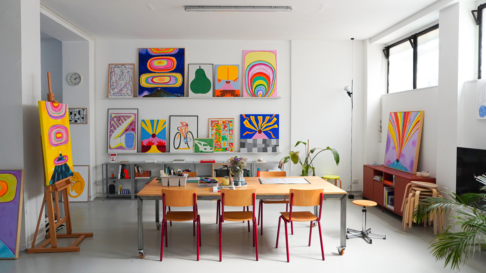
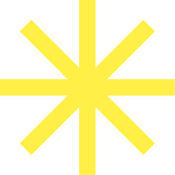

Shut Up Claudia
Claudia draws, paints and makes art in every forms. Her work moves between illustration, paintings and large colorful canvases, and most of the walls in the studio are hers.
Molto stems from the desire to create a place where we could work, experiment and let our creativity flow.

We opened Molto in 2022. The space was originally a poorly maintained leather workshop inside a classic Milanese building with high ceilings, large windows, and plenty of space. We renovated it ourselves with the help of a few friends, and we’ve slowly filled it with life over the years.
As a creative couple, and married, we wanted a space where we could not only do our client work, but also experiment, paint, and build our collection of art and design books.
We set up a large table right in the center of the room, which quickly became the anchor of our studio. It’s where we draw, make collages, stack piles of books for inspiration, and host workshops with other creatives.
We like it here. It's our second home.
Claudia draws, paints and makes art in every forms. Her work moves between illustration, paintings and large colorful canvases, and most of the walls in the studio are hers.
Loris works on animation, illustration and design projects. He looks after the library and makes sure everything is in order. He recently started a new drawing series called “Automobili”.
We work in different fields, from design to illustration, art direction and creative consultancy. When we join our forces, we're a great team. If you wanna work with us, drop a line to studio@molto.work
